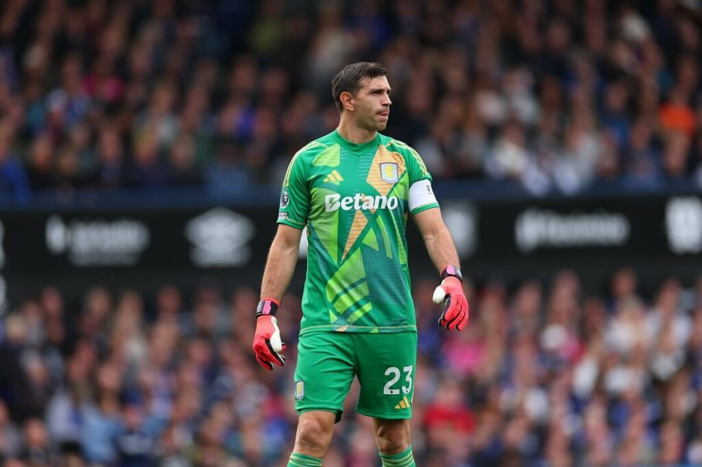

GANADORES:
AITANA
RODRI
EMILIANO
CARLO ANCELOTTI
MEJOR PORTERO 2024
EMILIANO MARTÍNEZ

Aston Villa termina el campeonato de Liga en puestos para disputar la UEFA Champions League
Campeón de la Copa América
Más información